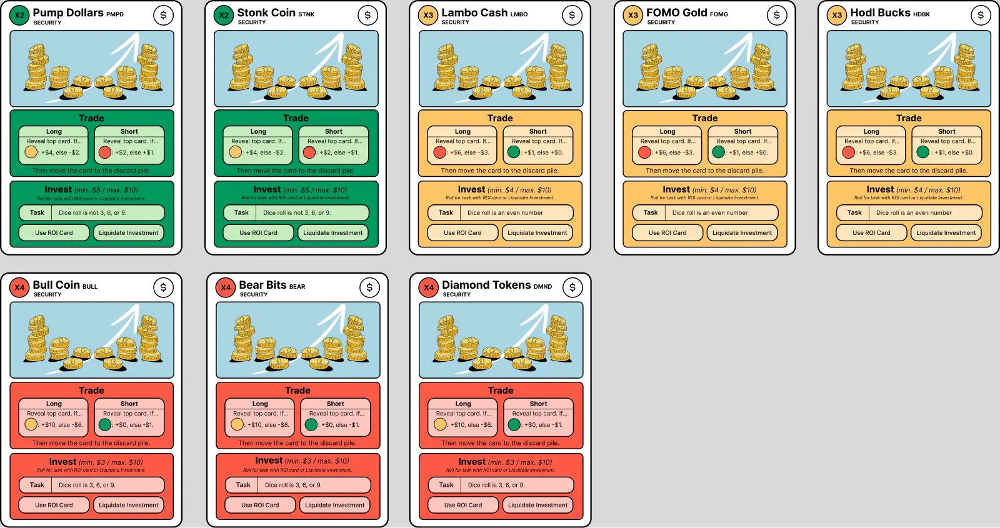
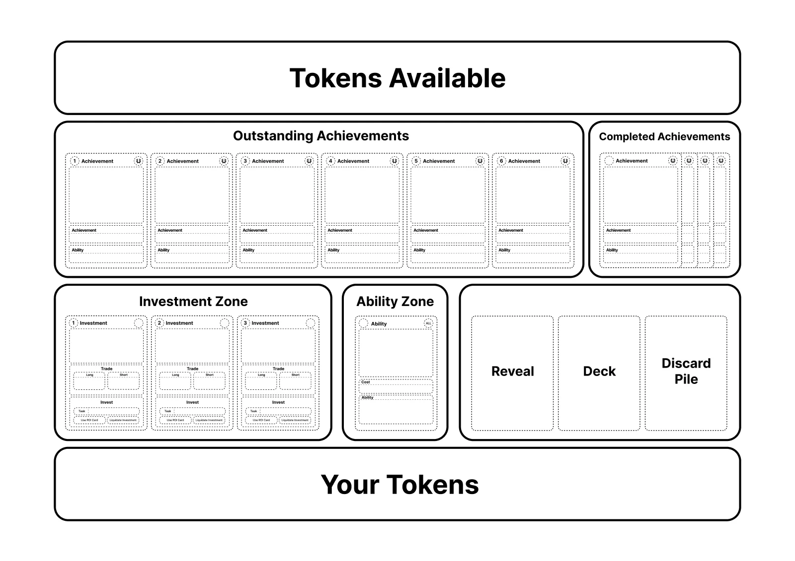
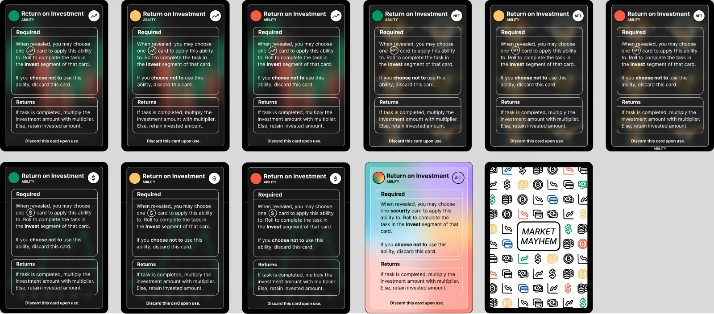
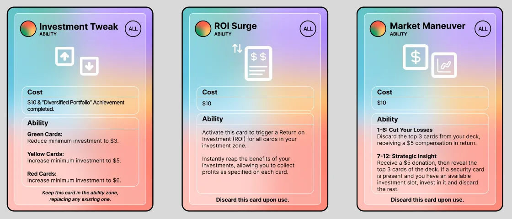

01 · The idea
Meme investing, turned into a game.
Market Mayhem borrows from internet investing culture: Stonk Coin, Lambo Cash, Diamond Tokens and MonkeyMania NFTs. Players build a portfolio, gamble on trades and chase achievements before their tokens run out.
I worked on the full game design: rules, card types, the player board and the visual system.
02 · The system
Risk you can read at a glance.
Every security is colour-coded by risk. Green pays 2×, yellow 3× and red 4×, so you can judge a card from across the table.
On your turn you either trade (go long or short on the next card) or invest between a minimum and $10, then roll dice to complete the card’s task. Return on Investment cards multiply your stake if you hit the task.



03 · Achievements
Six goals that push you to play differently.
Achievements reward strategies, not luck: hold one of each risk level, diversify across every security, or collect three NFTs. Each one unlocks a lasting ability, so finishing one changes how you play the rest of the game.
04 · My expansion
My expansion set.
Each of us also designed a small expansion. Mine adds three ability cards that let players bend the rules: Investment Tweak changes minimum investments by risk colour, ROI Surge cashes in everything at once, and Market Maneuver gives a dice-based gamble.

05 · What I learned
Clear rules make chaos fun.
The theme is silly on purpose, but the cards had to be precise. Every number, cost and condition sits in the same place on every card, so players spend their time making bad investments, not reading the rulebook.
06 · Trade-offs
The calls I made, and what they cost.
The theme is chaos. The rules couldn’t be.
How do players read risk?
Colour plus a printed multiplier (chosen)
Green, yellow and red read from across the table, and the ×2, ×3, ×4 badge means colour-blind players aren’t left out.
Numbers only (not chosen)
Accurate, but players would have to read every card up close.
How many choices per turn?
Two: trade or invest (chosen)
Turns stay fast and easy to teach.
Many smaller actions (not chosen)
More strategy, but slower turns and a much longer rulebook.
What do achievements give you?
A lasting ability (chosen)
Finishing one changes how you play the rest of the game.
Just points (not chosen)
Simpler to explain, but nothing changes once you earn them.
What worked
- Keeping every number in the same spot on every card made the deck quick to scan.
- Abilities from achievements gave players a reason to chase a strategy.
What I’d change
- More cards meant more rules. I’d playtest with new players to see where they get stuck.
- Some ability text is long; I’d tighten it so it fits at a glance.